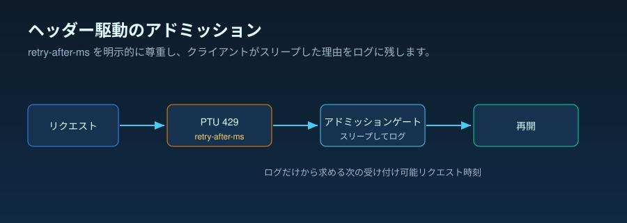

運用エッセイ · PTU の回復と 429 ハンドリング
429 は単なるエラーではなく、回復シグナルです
トラフィックのバーストが PTU デプロイを利用率 100% へ押し上げ、呼び出しが
429 として返り始めます。反射的に、三つの手段のいずれかを選びがちです。
容量が空いて見えるまでヘルスチェックのポーリングループを回す、当てずっぽうの
固定タイマーで再試行する、あるいはすべてをただちに別のターゲットへ振り向ける。
いずれも、クライアントがいつ再試行しても安全かを推測しなければならない、という
前提に立っています。しかし、推測する必要はありません。429 はすでにその答えをヘッダー
retry-after-ms に載せています。つまり運用上の問いは「呼び出しは
失敗したか」ではなく、「次の判断を誰が握るか、つまり待つ、リダイレクトする、
中止する」です。
retry-after-ms ヘッダーがアドミッション制御のルール
です。これを尊重し、ジッターを加え、観測された長いテールに備えます。1枚要約は
要点を一つに絞り、根拠の境界も示します。ヘッダーは Microsoft Learn の
規定であり、その隣の「中央値は短く、テールは長い」形は、本リポジトリのソース
実行から取った匿名化済みの公開集計を記述的に示したものです。
429 回復の1枚要約 SVG を開く。

なぜ推測せず、ヘッダーを読むのか
三つの反射的反応はいずれも、ひとつの隠れた前提を共有しています。クライアントは
容量がいつ空くかを知る術がなく、探りを入れるか、固定間隔で待つか、立ち去るしか
ないという前提です。それを受け入れる前に、二つの事実を並べておく価値があります。
一つ目は、Microsoft Learn の文書です。利用率 100% でサービスは
ただちに 429 を返し、retry-after-ms——いつ再試行するかについて
サービスが提供する待機値を付与する。二つ目は、本リポジトリのソース実行に
わたって実際に観測された retry-after-ms の値の匿名化済みの公開
集計で、それらの推奨された待機が実際にどう見えたかを記述的に示す目的で含めて
います。二つを合わせると、「いつ再試行して安全か」は、クライアント側の推測から、
サービスが返してくる値へと変わります。
立ち止まる価値があるのは、その集計の形です。推奨された待機は中央値で短かった（全体の p50 ≈ 43 ms）。そのため、ヘルスチェックのループや
当てずっぽうの固定間隔のバックオフは、サービスが実際に求める時間よりはるかに
長く待つことになりがちです。しかしテールは無視できませんでした。待機のごく一部は
17,000 ms（全体の p99 ≈ 16,921 ms）まで伸びていました。
この「中央値は短く、テールは長い」という分布が、運用上の重要な特徴です。
ヘッダーは固定のリセット時計ではなく、アドミッション制御のシグナルとして扱う
べきです。即時の 429 と retry-after-ms ヘッダーの規定は Microsoft Learn が
文書化しています。いつ待つのをやめてリダイレクトするかを単一のレイテンシ
予算の上限で決めるべきだ、というのは本リポジトリが擁護する運用上の推論です。
下の元チャートがその分布を明示します。
問い
PTU 容量が「今はだめ」と返したとき、クライアントは次の手をどう判断すべきでしょうか。
根拠
Microsoft Learn のプロビジョニングされたスループットとスピルオーバーのドキュメント、そして本リポジトリの PTU アドミッションコントローラーの運用ノート。
判断
リトライのオーナーを一つに絞ります。ヘッダーを尊重し、ジッターを加え、遅延ポリシーが要求するときだけリダイレクトします。
公式仕様 · サービスが何を伝えるか
ヘッダーがアドミッションシグナルになります
Microsoft Learn は、PTU の高負荷ハンドリングを、retry-after-ms
と retry-after レスポンスヘッダーを伴う即時の 429 経路として
説明しています。同じ本番ガイドは、この待機をクライアント側のリトライにも、
リクエストを別のサービングターゲットへリダイレクトするためにも使えると述べて
います。
文書化されていること
retry-after-ms をサービス提供の待機値として扱います。
推測した固定のリセット間隔よりも強い根拠になります。
文書化されていないこと
待機値の背後にある正確な計算式は公開されていません。クライアント側で 決定論的なリセットモデルを独自に作らないでください。
運用上の推論
ヘッダーがすでに再試行のタイミングを伝えているなら、ヘルスチェックの ポーリングは通常、弱いシグナルに加えて余分なトラフィックとノイズの多い テレメトリをもたらします。

サービスの挙動 · なぜ待機は一定ではないのか
待機はアドミッション制御であり、固定のクールダウンではありません
Microsoft Learn は PTU の利用率を、漏れバケツアルゴリズムの一種として文書化
しています。各リクエストは推定計算コスト、つまりプロンプトのトークン数から
キャッシュ済みトークンを引き、呼び出しの max_tokens を足したものを加える一方、デプロイ済み容量は PTU 数に比例して継続的に排出されます。
リクエストが到着した時点で利用率がすでに 100% なら、サービスはただちに HTTP
429 を返し、次のリクエストが受け入れられるまでどれだけ待つかを示す
retry-after-ms と retry-after ヘッダーを付与します。
待機はその瞬間にバケツがどう排出されているかを反映するため、固定のクールダウン ではありません。だから同じ文書化された契約は、一つではなく二つのクライアント 経路を支えます。待機が呼び出し側のレイテンシ予算に収まるときはヘッダーを尊重し、 その予算を超える待機はリダイレクトまたは失敗の条件として扱います。単一の予算 上限で二つの経路を分けるべきだ、というのは本リポジトリが擁護する運用上の推論 です。即時の 429 とヘッダーの契約は Microsoft Learn が文書化しているものです。
retry-after-ms の分布（記述的）。
X 軸： レスポンスヘッダーが助言した待機時間（ミリ秒）。
Y 軸： その待機時間以下となる 429 レスポンスの経験的な累積割合。
線： ソースグループごとに 1 本＋結合した 1 本、つまりバースト型
ソース（n = 167）、予約型ソース（n = 26）、結合サンプル
（n = 193）。これは経験的累積分布であり、度数のヒストグラムでは
ありません。 読み方： 各曲線はゼロ付近でほぼ頂点まで立ち上がり
——このサンプルでは推奨された待機の大半が短かった（全体の
p50 ≈ 43 ms）——その後、約 17,000 ms に達する長い
テールへと平らになります。だから待機のごく一部は非常に長く（全体の
p99 ≈ 16,921 ms）でした。この「中央値は短く、テールは
長い」形が、下の運用パターンが待機をレイテンシ予算で打ち切ってからリダイレクト
または失敗する理由です。 根拠の境界： これは本リポジトリの
ソース実行からの 429 イベントの一つの匿名化済み公開集計を記述的に示した
ものです。サービスレベルの保証でも、リセットモデルでも、特定のデプロイ・
リージョン・将来の API バージョンの測定でもありません。 出典：
パーセンタイル値は本リポジトリの
results/retry-after-characterization/retry_after_ms_percentiles.csv
から来ています（ソース CSV）。

| ソースグループ | 429 件数 | p50 | p90 | p99 | 最大 |
|---|---|---|---|---|---|
| 全体 | 193 | 43 ms | 50.8 ms | 16,921.12 ms | 17,258 ms |
| バースト型ソース | 167 | 43 ms | 49 ms | 16,983.26 ms | 17,258 ms |
| 予約型ソース | 26 | 3 ms | 60 ms | 60 ms | 60 ms |
文書化（Tier 1）
利用率 100% でサービスはただちに retry-after-ms と retry-after を伴う 429 を返します。Learn は 429 をサービスエラーではなくトラフィック管理のシグナルと呼びます。
文書化（Tier 1）
推定は max_tokens を使います。これを実際の生成サイズに近づけると同時実行性が上がります。キャッシュ済みトークンは全額割引を受け、利用率には加わりません。
推論（Tier 2）
呼び出し側が単一のレイテンシ予算の上限を設定し、それを超えたら待機からリダイレクトへ切り替えるべきだ、というのは本リポジトリの経験則であり、Learn の仕様ではありません。
運用パターン · リトライのオーナーは一つ
リトライループを積み重ねない
安全なパターンは、意図的に単純です。429 の回復処理を担うコンポーネントを
ちょうど一つだけ選びます。SDK がリトライするよう構成されているなら、待機の制御は
SDK に委ねます。アプリケーションのルーターが回復処理を担うなら、SDK の自動
リトライを無効化し、ルーターに retry-after-ms を直接パースさせます。
retry-after-ms
をパースし、retry-after にフォールバックし、安全なスロットル
イベントを発行し、二重のリトライ所有権を拒否する、小さなヘッダー駆動の
アドミッションコントローラーが含まれています。

スリープ経路
呼び出しごとの遅延よりもスループットが重要なときに使います。ヘッダー値とジッターの分だけ待ってから、再試行します。
リダイレクト経路
PTU に留まることよりも遅延が重要なときに使います。429 が来たらすぐに標準ターゲットへルーティングします。
中止経路
待機もリダイレクトもポリシーに違反するときに使います。リトライの嵐を隠すのではなく、制御されたレスポンスを返します。
フォールバック · ネイティブかカスタムか
リダイレクトはポリシーの選択であり、パニックボタンではありません
Microsoft Learn のスピルオーバー機能は、超過トラフィックを標準ターゲットへ リダイレクトでき、スピルオーバーの挙動を識別するヘッダーを公開します。 プラットフォームがサポートする形で要件を満たせるなら、それが運用の手間が少ない 経路です。カスタムルーターは、PTU ターゲットが 429 を返す前にアプリケーションが 判断しなければならないとき、あるいはルーティングポリシーがテナント、リージョン、 遅延予算、ビジネス優先度に依存するときに、依然として有用です。
ネイティブスピルオーバー
単純なオーバーフローレーンが合致し、追加のルーティングロジックが価値以上にリスクを増やすときに最適です。
カスタムルーター
ユーザー遅延が費やされる前に、待機・リダイレクト・中止のどれを選ぶかをアプリケーションポリシーが決めなければならないときに最適です。
アンチパターン
SDK のリトライ + ルーターのリトライ + スピルオーバーは、試行回数を掛け算で増やしかねません。まず所有権を統合します。
出典と根拠の境界
Tier 1 — サービス契約（Microsoft Learn）。 429 のアドミッション 挙動、両方のリトライヘッダー、漏れバケツの利用率モデル、そして SDK の既定 リトライが、ここに文書化されています。
- [1] プロビジョニング済みスループットのデプロイを本番で運用する —
利用率 100% での即時 429、
retry-after-msとretry-afterレスポンスヘッダー、漏れバケツの利用率モデル、そして OpenAI SDK の既定の 429 リトライ（max_retries）を定義しています。出典：Microsoft Learn ドキュメント（2026-06-04 アクセス）· アーカイブ。 - [2] プロビジョニング済みデプロイのスピルオーバーでトラフィックを管理する —
非 200（
429を含む）の超過を、spilloverDeploymentNameプロパティと、スピルオーバー元のデプロイを示す x-ms レスポンスヘッダー 経由で標準デプロイへリダイレクトするスピルオーバーを定義しています。出典：Microsoft Learn ドキュメント（2026-06-04 アクセス）· アーカイブ。
Tier 2 — 運用上の推論（本リポジトリ）。 経験則——リトライの オーナーを一つにする、ヘッダーを尊重する、フリート全体の再試行を分散させるためにジッター を加える、ヘッダーに従った待機を繰り返しても解消しないときだけスピルオーバーへリダイレクト する——は、運用上のものであり Learn の仕様ではありません。
- [3] 本リポジトリ、
docs/10-ptu-admission-controller.md— ヘッダー駆動のアドミッションコントローラーのノート。リトライのオーナーを 一つに、retry-after-msを尊重、既定のジッター、待機が上限を超えたら フォールバック。出典。 - [4] 本リポジトリ、
batch_runner/ptu/admission_controller.py—retry-after-msをパースし、retry-afterに フォールバックし、二重のリトライ所有権を拒否するリファレンス実装。出典。
このトピックが示すこと、示さないこと。 アクセス日時点で
Microsoft Learn が明記する PTU のアドミッション制御の規定、すなわち利用率 100% での即時 429、
retry-after-ms と retry-after ヘッダー、そして
スピルオーバーのリダイレクト経路と、本リポジトリが擁護する小さな運用上の
経験則、つまりヘッダーを尊重し、フリートの再試行を分散させるためにジッターを加え、尊重した
待機を繰り返しても解消しないときだけスピルオーバーのデプロイへリダイレクトすることを文書化する。この規定がすべてのリージョン・モデル SKU・将来の API バージョンで
同一に成り立つかは検証しておらず、特定のデプロイの負荷下の測定もしません。
実務上のルール
実務上のルール：PTU デプロイが 429 を返したら、retry-after-ms を
アドミッション制御のシグナルとして扱う。これを尊重し、フリートの再試行を分散させる
ためにジッターを加え、ヘッダーに従った待機を繰り返しても解消しないときだけスピルオーバーの
デプロイへリダイレクトしてください。
次の記事では、いつ再試行するかから、同じプロンプトが繰り返されたとき実際に何が決まるかへと話を進めます。